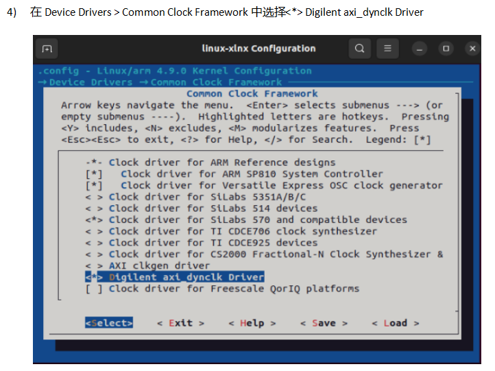
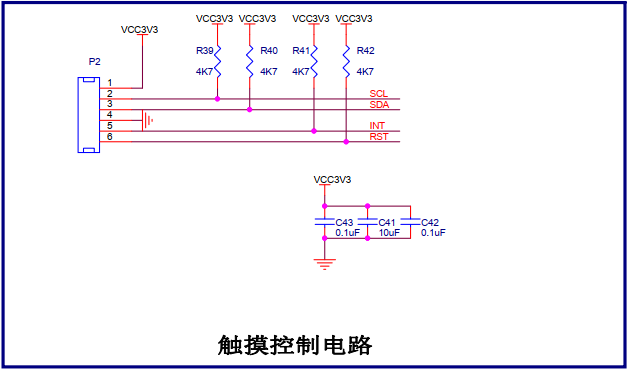
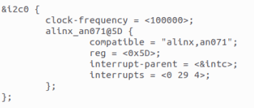
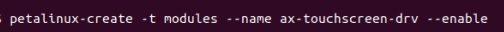
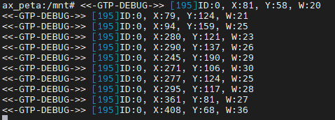

多点触摸屏驱动#
多点触摸屏我们并不陌生，也就是电容屏，现在的手机、pad都是多点触摸屏。很多应用场景单点触摸屏已经不能适应了，比如手机游戏就需要同时触摸多个点。当然这些都不是我们要关心的，我们只需要弄清楚他在linux中驱动的实现方法。
input子系统中的多点触摸屏#
多点触摸屏也是输入设备，前面我们讲的linux中input子系统中，也有队多点触摸屏的支持。回想一下input子系统，input子系统中，通过input_handler帮我们实现了fops中的方法，我们需要做的就是结合具体硬件，有数据时通过接口发送数据。实现一个输入设备驱动，步骤大致如下：
1.构造input_device
2.设置input_device参数
3.向内核注册input_device
4.当硬件接收到数据时通过input_event上报数据
结合上我们这里的硬件设备多点触摸屏，大致步骤如下：
分配input_dev结构体
struct input_dev *ts_dev; ts_dev = input_allocate_device(); |
设置input_dev结构体
设置能够产生的事件类型：
set_bit(EV_SYN, ts_dev->evbit);//设置按键事件 set_bit(EV_ABS, ts_dev->evbit);//设置滑动事件 |
设置这类事件类型中能产生的具体事件：
set_bit(ABS_MT_TRACKING_ID, ts_dev->absbit); set_bit(ABS_MT_POSITION_X, ts_dev->absbit); set_bit(ABS_MT_POSITION_Y, ts_dev->absbit); |
设置事件范围
input_set_abs_params(ts_dev, ABS_MT_TRACKING_ID, 0, MTP_MAX_ID, 0, 0); input_set_abs_params(ts_dev, ABS_MT_POSITION_X, 0, MTP_MAX_X, 0, 0); input_set_abs_params(ts_dev, ABS_MT_POSITION_Y, 0, MTP_MAX_Y, 0, 0); |
注册input_dev结构体
input_register_device(ts_dev); |
硬件操作
注册中断：
request_irq(); |
上报事件：
input_report_abs(ts_dev, ABS_MT_POSITION_X, mtp_events[i].x); input_report_abs(ts_dev, ABS_MT_POSITION_Y, mtp_events[i].y); input_report_abs(ts_dev, ABS_MT_TRACKING_ID, mtp_events[i].id); input_mt_sync(ts_dev); |
多点触摸屏与SoC的接口#
触摸屏一般会通过IIC或者SPI连接到SoC，软件上把屏幕看成是一个平面坐标系，当我们触摸到屏幕上某个位置，触摸屏就会通过IIC或SPI发送这个点的坐标到SoC，SoC如何处理这个坐标这就是后话了。对于多点触摸屏来说也只是一次发送多个点而已。
当存在”多个”的概念时，就必然多了一个需要关心的属性，那就是多个之间的关系。这里我们上报也就有了两种模式，一是不关心触点间的关系直接上报位置，二是上位置的同时加上触电关系先后顺序等。
只上报触点位置：
ABS_MT_POSITION_X x0 ABS_MT_POSITION_Y y0 SYN_MT_REPORT ABS_MT_POSITION_X x1 ABS_MT_POSITION_Y y1 SYN_MT_REPORT |
上报触点位置和关系：
ABS_MT_TRACKING_ID 0 ABS_MT_POSITION_X x0 ABS_MT_POSITION_Y y0 ABS_MT_TRACKING_ID 1 ABS_MT_POSITION_X x1 ABS_MT_POSITION_Y y1 SYN_MT_REPORT |
我们的开发板平台是通过IIC和多点触摸屏互联的，也就是说我们的多点触摸屏驱动会是IIC和input子系统的混合体。
IIC框架比较简单，我们就直接通过代码去看。
vivado工程与petalinux#
ALINX的平台上是通过PL端的扩展口和触摸屏相连的，因此需要使用vivado软件配置工程，然后重新制作petalinux工程。重建vivado工程和petalinux工程我们在pwm章节中已经经历过一次了。
vivado工程配置方法步骤以及petalinux的设置可参考s4的教程，这里就不再重复说明了。有一点注意，我们这里的驱动都是当成模块来加载的，所以重新制作petalinux工程，我们只需要做其中的一步，选择Digilent axi_dynclk Driver即可。
实验#
原理图#
触摸屏幕的电路很简单，一是传递数据的I2C(SCL、SDA)，二是提醒数据的中断INT，三是复位信号RST。
设备树#
把触摸屏看作是一个IIC的client，把设备树节点放在&i2c0下。设备树修改方法可参考前面的章节，别忘了要在新得petalinux工程中操作哦。
多点触摸屏驱动程序#
在新的petalinux工程中新建驱动文件ax-touchscreen-drv：
在文件ax-touchscreen-drv.c中输入下面的代码：
#include <linux/kernel.h>
#include <linux/hrtimer.h>
#include <linux/i2c.h>
#include <linux/input.h>
#include <linux/module.h>
#include <linux/delay.h>
#include <linux/i2c.h>
#include <linux/proc_fs.h>
#include <linux/string.h>
#include <asm/uaccess.h>
#include <linux/vmalloc.h>
#include <linux/interrupt.h>
#include <linux/io.h>
#include <linux/gpio.h>
#include <linux/irq.h>
#include <linux/uaccess.h>
#define SCREEN_MAX_X 800
#define SCREEN_MAX_Y 480
//***************************PART1:ON/OFF define*******************************
#define GTP_DEBUG_ON 1
#define GTP_DEBUG_ARRAY_ON 0
#define GTP_DEBUG_FUNC_ON 0
#define IIC_ADDRESS 0x14
struct goodix_ts_data {
spinlock_t irq_lock;
struct i2c_client *client;
struct input_dev *input_dev;
struct hrtimer timer;
struct work_struct work;
s32 irq_is_disable;
s32 use_irq;
u16 abs_x_max;
u16 abs_y_max;
u8 int_trigger_type;
u8 gtp_rawdiff_mode;
};
//*************************** PART2:TODO define **********************************
#define GTP_MAX_HEIGHT 800
#define GTP_MAX_WIDTH 480
#define GTP_INT_TRIGGER 0 // 0: Rising 1: Falling
#define GTP_MAX_TOUCH 5
//***************************PART3:OTHER define*********************************
#define GTP_DRIVER_VERSION "V2.4<2014/11/28>"
#define GTP_I2C_NAME "alinx,an071"
#define GTP_POLL_TIME 10
#define GTP_ADDR_LENGTH 2
#define GTP_CONFIG_MIN_LENGTH 186
#define GTP_CONFIG_MAX_LENGTH 240
#define FAIL 0
#define SUCCESS 1
#define SWITCH_OFF 0
#define SWITCH_ON 1
// Registers define
#define GTP_READ_COOR_ADDR 0x814E
#define GTP_REG_SLEEP 0x8040
#define GTP_REG_SENSOR_ID 0x814A
#define GTP_REG_CONFIG_DATA 0x8047
#define GTP_REG_VERSION 0x8140
#define RESOLUTION_LOC 3
#define TRIGGER_LOC 8
// Log define
#define GTP_INFO(fmt,arg...) printk("<<-GTP-INFO->> "fmt"\n",##arg)
#define GTP_ERROR(fmt,arg...) printk("<<-GTP-ERROR->> "fmt"\n",##arg)
#define GTP_DEBUG(fmt,arg...) do{\
if(GTP_DEBUG_ON)\
printk("<<-GTP-DEBUG->> [%d]"fmt"\n",__LINE__, ##arg);\
}while(0)
#define GTP_DEBUG_FUNC() do{\
if(GTP_DEBUG_FUNC_ON)\
printk("<<-GTP-FUNC->> Func:%s@Line:%d\n",__func__,__LINE__);\
}while(0)
static const char *goodix_ts_name = "goodix-ts";
static const char *goodix_input_phys = "input/ts";
static struct workqueue_struct *goodix_wq;
struct i2c_client * i2c_connect_client = NULL;
u8 config[GTP_CONFIG_MAX_LENGTH + GTP_ADDR_LENGTH]
= {GTP_REG_CONFIG_DATA >> 8, GTP_REG_CONFIG_DATA & 0xff};
static s8 gtp_i2c_test(struct i2c_client *client);
struct edt_i2c_chip_data
{
int max_support_points;
};
s32 gtp_i2c_read(struct i2c_client *client, u8 *buf, s32 len)
{
struct i2c_msg msgs[2];
s32 ret=-1;
s32 retries = 0;
GTP_DEBUG_FUNC();
msgs[0].flags = !I2C_M_RD;
msgs[0].addr = client->addr;//client->addr;
msgs[0].len = GTP_ADDR_LENGTH;
msgs[0].buf = &buf[0];
msgs[1].flags = I2C_M_RD;
msgs[1].addr = client->addr;//client->addr;
msgs[1].len = len - GTP_ADDR_LENGTH;
msgs[1].buf = &buf[GTP_ADDR_LENGTH];
while(retries < 5)
{
ret = i2c_transfer(client->adapter, msgs, 2);
if(ret == 2)break;
retries++;
}
if((retries >= 5))
{
GTP_ERROR("I2C Read: 0x%04X, %d bytes failed, errcode: %d! Process reset.", (((u16)(buf[0] << 8)) | buf[1]), len-2, ret);
}
return ret;
}
s32 gtp_i2c_write(struct i2c_client *client,u8 *buf,s32 len)
{
struct i2c_msg msg;
s32 ret = -1;
s32 retries = 0;
GTP_DEBUG_FUNC();
msg.flags = !I2C_M_RD;
msg.addr = client->addr;//client->addr;
msg.len = len;
msg.buf = buf;
//msg.scl_rate = 300 * 1000; // for Rockchip, etc
while(retries < 5)
{
ret = i2c_transfer(client->adapter, &msg, 1);
if (ret == 1)break;
retries++;
}
if((retries >= 5))
{
GTP_ERROR("I2C Write: 0x%04X, %d bytes failed, errcode: %d! Process reset.", (((u16)(buf[0] << 8)) | buf[1]), len-2, ret);
}
return ret;
}
void gtp_irq_disable(struct goodix_ts_data *ts)
{
unsigned long irqflags;
GTP_DEBUG_FUNC();
spin_lock_irqsave(&ts->irq_lock, irqflags);
if (!ts->irq_is_disable)
{
ts->irq_is_disable = 1;
disable_irq_nosync(ts->client->irq);
}
spin_unlock_irqrestore(&ts->irq_lock, irqflags);
}
void gtp_irq_enable(struct goodix_ts_data *ts)
{
unsigned long irqflags = 0;
GTP_DEBUG_FUNC();
spin_lock_irqsave(&ts->irq_lock, irqflags);
if (ts->irq_is_disable)
{
enable_irq(ts->client->irq);
ts->irq_is_disable = 0;
}
spin_unlock_irqrestore(&ts->irq_lock, irqflags);
}
static void gtp_touch_down(struct goodix_ts_data* ts,s32 id,s32 x,s32 y,s32 w)
{
input_report_abs(ts->input_dev, ABS_X, x);
input_report_abs(ts->input_dev, ABS_Y, y);
input_event(ts->input_dev, EV_KEY, BTN_TOUCH, 1);
input_report_abs(ts->input_dev, ABS_PRESSURE, 1);
}
static void gtp_touch_up(struct goodix_ts_data* ts, s32 id,s32 x,s32 y,s32 w)
{
input_report_key(ts->input_dev, BTN_TOUCH, 0);
input_report_abs(ts->input_dev, ABS_PRESSURE, 0);
GTP_DEBUG("ID:%d, X:%d, Y:%d, W:%d", id, x, y, w);
}
static void goodix_ts_work_func(struct work_struct *work)
{
u8 end_cmd[3] = {GTP_READ_COOR_ADDR >> 8, GTP_READ_COOR_ADDR & 0xFF, 0};
u8 point_data[2 + 1 + 8 * GTP_MAX_TOUCH + 1]={GTP_READ_COOR_ADDR >> 8, GTP_READ_COOR_ADDR & 0xFF};
u8 touch_num = 0;
u8 finger = 0;
static u16 pre_touch = 0;
static u8 pre_key = 0;
u8 key_value = 0;
u8* coor_data = NULL;
s32 input_x = 0;
s32 input_y = 0;
s32 input_w = 0;
s32 id = 0;
s32 i = 0;
s32 ret = -1;
struct goodix_ts_data *ts = NULL;
GTP_DEBUG_FUNC();
ts = container_of(work, struct goodix_ts_data, work);
ret = gtp_i2c_read(ts->client, point_data, 12);
if (ret < 0)
{
GTP_ERROR("I2C transfer error. errno:%d\n ", ret);
if (ts->use_irq)
{
gtp_irq_enable(ts);
}
return;
}
finger = point_data[GTP_ADDR_LENGTH];
if (finger == 0x00)
{
if (ts->use_irq)
{
gtp_irq_enable(ts);
}
return;
}
if((finger & 0x80) == 0)
{
goto exit_work_func;
}
touch_num = finger & 0x0f;
if (touch_num > GTP_MAX_TOUCH)
{
goto exit_work_func;
}
if (touch_num > 1)
{
u8 buf[8 * GTP_MAX_TOUCH] = {(GTP_READ_COOR_ADDR + 10) >> 8, (GTP_READ_COOR_ADDR + 10) & 0xff};
ret = gtp_i2c_read(ts->client, buf, 2 + 8 * (touch_num - 1));
memcpy(&point_data[12], &buf[2], 8 * (touch_num - 1));
}
pre_key = key_value;
if (touch_num)
{
for (i = 0; i < touch_num; i++)
{
coor_data = &point_data[i * 8 + 3];
id = coor_data[0] & 0x0F;
input_x = coor_data[1] | (coor_data[2] << 8);
input_y = coor_data[3] | (coor_data[4] << 8);
input_w = coor_data[5] | (coor_data[6] << 8);
{
gtp_touch_down(ts, id, input_x, input_y, input_w);
}
}
}
else if (pre_touch)
{
{
for (i = 0; i < pre_touch; i++)
{
coor_data = &point_data[i * 8 + 3];
id = coor_data[0] & 0x0F;
input_x = coor_data[1] | (coor_data[2] << 8);
input_y = coor_data[3] | (coor_data[4] << 8);
input_w = coor_data[5] | (coor_data[6] << 8);
gtp_touch_up(ts, id, input_x, input_y, input_w);
}
}
}
pre_touch = touch_num;
input_sync(ts->input_dev);
exit_work_func:
if(!ts->gtp_rawdiff_mode)
{
ret = gtp_i2c_write(ts->client, end_cmd, 3);
if (ret < 0)
{
GTP_INFO("I2C write end_cmd error!");
}
}
if (ts->use_irq)
{
gtp_irq_enable(ts);
}
}
static enum hrtimer_restart goodix_ts_timer_handler(struct hrtimer *timer)
{
struct goodix_ts_data *ts = container_of(timer, struct goodix_ts_data, timer);
GTP_DEBUG_FUNC();
queue_work(goodix_wq, &ts->work);
hrtimer_start(&ts->timer, ktime_set(0, (GTP_POLL_TIME+6)*1000000), HRTIMER_MODE_REL);
return HRTIMER_NORESTART;
}
static irqreturn_t goodix_ts_irq_handler(int irq, void *dev_id)
{
struct goodix_ts_data *ts = dev_id;
GTP_DEBUG_FUNC();
gtp_irq_disable(ts);
queue_work(goodix_wq, &ts->work);
return IRQ_HANDLED;
}
static s32 gtp_init_panel(struct goodix_ts_data *ts)
{
if ((ts->abs_x_max == 0) && (ts->abs_y_max == 0))
{
ts->abs_x_max = (config[RESOLUTION_LOC + 1] << 8) + config[RESOLUTION_LOC];
ts->abs_y_max = (config[RESOLUTION_LOC + 3] << 8) + config[RESOLUTION_LOC + 2];
ts->int_trigger_type = (config[TRIGGER_LOC]) & 0x03;
}
GTP_INFO("X_MAX: %d, Y_MAX: %d, TRIGGER: 0x%02x", ts->abs_x_max,ts->abs_y_max,ts->int_trigger_type);
msleep(10);
return 0;
}
s32 gtp_read_version(struct i2c_client *client, u16* version)
{
s32 ret = -1;
u8 buf[8] = {GTP_REG_VERSION >> 8, GTP_REG_VERSION & 0xff};
GTP_DEBUG_FUNC();
ret = gtp_i2c_read(client, buf, sizeof(buf));
if (ret < 0)
{
GTP_ERROR("GTP read version failed");
return ret;
}
if (version)
{
*version = (buf[7] << 8) | buf[6];
}
if (buf[5] == 0x00)
{
GTP_INFO("IC Version: %c%c%c_%02x%02x", buf[2], buf[3], buf[4], buf[7], buf[6]);
}
else
{
GTP_INFO("IC Version: %c%c%c%c_%02x%02x", buf[2], buf[3], buf[4], buf[5], buf[7], buf[6]);
}
return ret;
}
static s8 gtp_i2c_test(struct i2c_client *client)
{
u8 test[3] = {GTP_REG_CONFIG_DATA >> 8, GTP_REG_CONFIG_DATA & 0xff};
u8 retry = 0;
s8 ret = -1;
GTP_DEBUG_FUNC();
while(retry++ < 5)
{
ret = gtp_i2c_read(client, test, 3);
if (ret > 0)
{
return ret;
}
GTP_ERROR("GTP i2c test failed time %d.",retry);
msleep(10);
}
return ret;
}
static s8 gtp_request_irq(struct goodix_ts_data *ts)
{
s32 ret = -1;
unsigned long irq_flags;
GTP_DEBUG_FUNC();
GTP_DEBUG("INT trigger type:%x", ts->int_trigger_type);
irq_flags = irq_get_trigger_type(ts->client->irq);
if (irq_flags == IRQF_TRIGGER_NONE) irq_flags = IRQF_TRIGGER_HIGH;
irq_flags |= IRQF_ONESHOT;
ret = devm_request_threaded_irq(&ts->client->dev, ts->client->irq, NULL, goodix_ts_irq_handler, irq_flags, ts->client->name, ts);
if (ret)
{
GTP_ERROR("Request IRQ failed!ERRNO:%d.", ret);
hrtimer_init(&ts->timer, CLOCK_MONOTONIC, HRTIMER_MODE_REL);
ts->timer.function = goodix_ts_timer_handler;
hrtimer_start(&ts->timer, ktime_set(1, 0), HRTIMER_MODE_REL);
return -1;
}
else
{
gtp_irq_disable(ts);
ts->use_irq = 1;
return 0;
}
}
static s8 gtp_request_input_dev(struct goodix_ts_data *ts)
{
s8 ret = -1;
GTP_DEBUG_FUNC();
ts->input_dev = input_allocate_device();
if (ts->input_dev == NULL)
{
GTP_ERROR("Failed to allocate input device.");
return -ENOMEM;
}
__set_bit(EV_ABS, ts->input_dev->evbit);
__set_bit(EV_KEY, ts->input_dev->evbit);
__set_bit(EV_SYN, ts->input_dev->evbit);
__set_bit(BTN_TOUCH, ts->input_dev->keybit);
__set_bit(ABS_X, ts->input_dev->absbit);
__set_bit(ABS_Y, ts->input_dev->absbit);
__set_bit(ABS_PRESSURE, ts->input_dev->absbit);
input_set_abs_params(ts->input_dev, ABS_X, 0, SCREEN_MAX_X, 0, 0);
input_set_abs_params(ts->input_dev, ABS_Y, 0, SCREEN_MAX_Y, 0, 0);
ts->input_dev->name = goodix_ts_name;
ts->input_dev->phys = goodix_input_phys;
ts->input_dev->id.bustype = BUS_I2C;
ts->input_dev->dev.parent = &ts->client->dev;
input_set_drvdata(ts->input_dev, ts);
ret = input_register_device(ts->input_dev);
if (ret)
{
GTP_ERROR("Register %s input device failed", ts->input_dev->name);
return -ENODEV;
}
return 0;
}
static int goodix_ts_probe(struct i2c_client *client, const struct i2c_device_id *id)
{
s32 ret = -1;
struct goodix_ts_data *ts;
u16 version_info;
GTP_DEBUG_FUNC();
GTP_INFO("GTP Driver Version: %s", GTP_DRIVER_VERSION);
GTP_INFO("GTP I2C Address: 0x%02x", IIC_ADDRESS);
i2c_connect_client = client;
if (!i2c_check_functionality(client->adapter, I2C_FUNC_I2C))
{
GTP_ERROR("I2C check functionality failed.");
return -ENODEV;
}
ts = kzalloc(sizeof(*ts), GFP_KERNEL);
if (ts == NULL)
{
GTP_ERROR("Alloc GFP_KERNEL memory failed.");
return -ENOMEM;
}
INIT_WORK(&ts->work, goodix_ts_work_func);
ts->client = client;
spin_lock_init(&ts->irq_lock);
i2c_set_clientdata(client, ts);
ts->gtp_rawdiff_mode = 0;
ret = gtp_i2c_test(client);
if (ret < 0)
{
GTP_ERROR("I2C communication ERROR!");
}
ret = gtp_read_version(client, &version_info);
if (ret < 0)
{
GTP_ERROR("Read version failed.");
}
ret = gtp_init_panel(ts);
if (ret < 0)
{
GTP_ERROR("GTP init panel failed.");
ts->abs_x_max = GTP_MAX_WIDTH;
ts->abs_y_max = GTP_MAX_HEIGHT;
ts->int_trigger_type = GTP_INT_TRIGGER;
}
ret = gtp_request_input_dev(ts);
if (ret < 0)
{
GTP_ERROR("GTP request input dev failed");
}
ret = gtp_request_irq(ts);
if (ret < 0)
{
GTP_INFO("GTP works in polling mode.");
}
else
{
GTP_INFO("GTP works in interrupt mode.");
}
if (ts->use_irq)
{
gtp_irq_enable(ts);
}
return 0;
}
static void goodix_ts_remove(struct i2c_client *client)
{
struct goodix_ts_data *ts = i2c_get_clientdata(client);
GTP_DEBUG_FUNC();
if (ts)
{
if (ts->use_irq)
{
//free_irq(client->irq, ts);
}
else
{
hrtimer_cancel(&ts->timer);
}
}
GTP_INFO("GTP driver removing...");
i2c_set_clientdata(client, NULL);
input_unregister_device(ts->input_dev);
kfree(ts);
}
static int __maybe_unused alinx_ts_suspend(struct device *dev)
{
struct i2c_client *client = to_i2c_client(dev);
if (device_may_wakeup(dev)) enable_irq_wake(client->irq);
return 0;
}
static int __maybe_unused alinx_ts_resume(struct device *dev)
{
struct i2c_client *client = to_i2c_client(dev);
if (device_may_wakeup(dev)) disable_irq_wake(client->irq);
return 0;
}
static SIMPLE_DEV_PM_OPS(alinx_ts_pm_ops, alinx_ts_suspend, alinx_ts_resume);
static const struct edt_i2c_chip_data alinx_data =
{
.max_support_points = 5,
};
static const struct of_device_id goodix_match_table[] = {
{.compatible = "alinx,an071", .data = &alinx_data },
{ },
};
static const struct i2c_device_id goodix_ts_id[] = {
{ .name = GTP_I2C_NAME, .driver_data = (long)&alinx_data },
{ }
};
static struct i2c_driver goodix_ts_driver = {
.probe = goodix_ts_probe,
.remove = goodix_ts_remove,
.id_table = goodix_ts_id,
.driver = {
.name = GTP_I2C_NAME,
.owner = THIS_MODULE,
.of_match_table = goodix_match_table,
.pm = &alinx_ts_pm_ops,
},
};
static int goodix_ts_init(void)
{
s32 ret;
GTP_DEBUG_FUNC();
GTP_INFO("GTP driver installing...");
goodix_wq = create_singlethread_workqueue("goodix_wq");
if (!goodix_wq)
{
GTP_ERROR("Creat workqueue failed.");
return -ENOMEM;
}
ret = i2c_add_driver(&goodix_ts_driver);
return ret;
}
static void __exit goodix_ts_exit(void)
{
GTP_DEBUG_FUNC();
GTP_INFO("GTP driver exited.");
i2c_del_driver(&goodix_ts_driver);
if (goodix_wq)
{
destroy_workqueue(goodix_wq);
}
}
module_init(goodix_ts_init);
module_exit(goodix_ts_exit);
MODULE_DESCRIPTION("GTP Series Driver");
MODULE_LICENSE("GPL");
驱动程序还是从入口函数开始看起。
625行goodix_ts_init()函数中初始化了一个工作队列，用于添加中断处理的内容。
638行通过i2c_add_driver添加的一个i2c驱动，之后就是i2c框架的内容，先看到注册的内容goodix_ts_driver。
goodix_ts_driver的定义在613行，主要看一下probe函数，跳转到474行goodix_ts_probe()函数实现。
499行添加一个队列项到队列中，队列项goodix_ts_work_func()实际也就是中断要处理的内容。198行的函数实现中，主要是对i2c返回的数据解析并处理，具体的定义可参考触摸屏的手册。解析后我们在gtp_touch_down、gtp_touch_up函数中做触摸对应的操作。
527行调用的gtp_request_input_dev()函数，内容是注册一个输入子系统，并且设置了点击事件滑动事件等。
代码中还有一些参数设置就不细说了。总结下来，就是通过i2c设置并获取触摸屏的信息，再通过输入子系统，把触摸行为反馈给系统，以响应其他程序的需求。
我们把21行的GTP_DEBUG_ON定义为1，编译后在板端加载驱动，点击屏幕，就能看到串口中断返回触摸坐标了。
但这还体现不出input子系统的作用，下一章我们结合lcd显示，再确认最终的测试结果。
运行测试#
在加载驱动之前，需要先将AN970触摸屏插到板卡上。

测试方法步骤如下：
mount -t nfs -o nolock 192.168.1.107:/home/alinx/work /mnt cd /mnt mkdir /tmp/qt mount qt_lib.img /tmp/qt cd /tmp/qt source ./qt_env_set.sh cd /mnt insmod ./ax-touchscreen-drv.ko |
在加载完驱动后，点击屏幕，控制台会打印点击的坐标信息。
